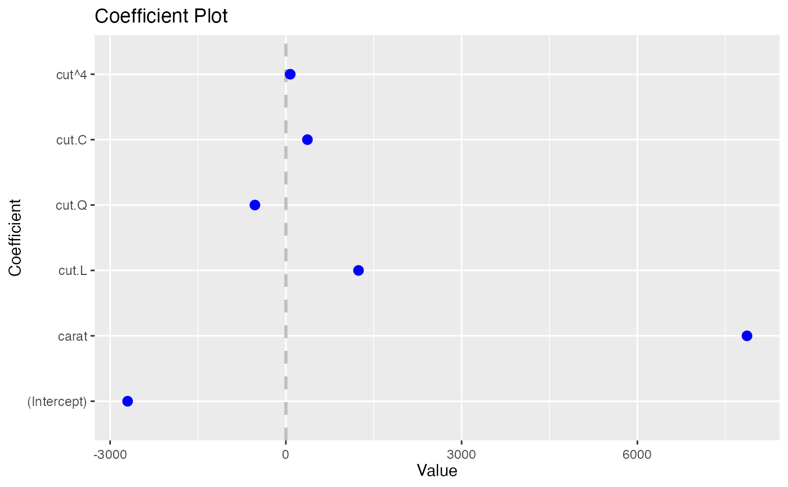
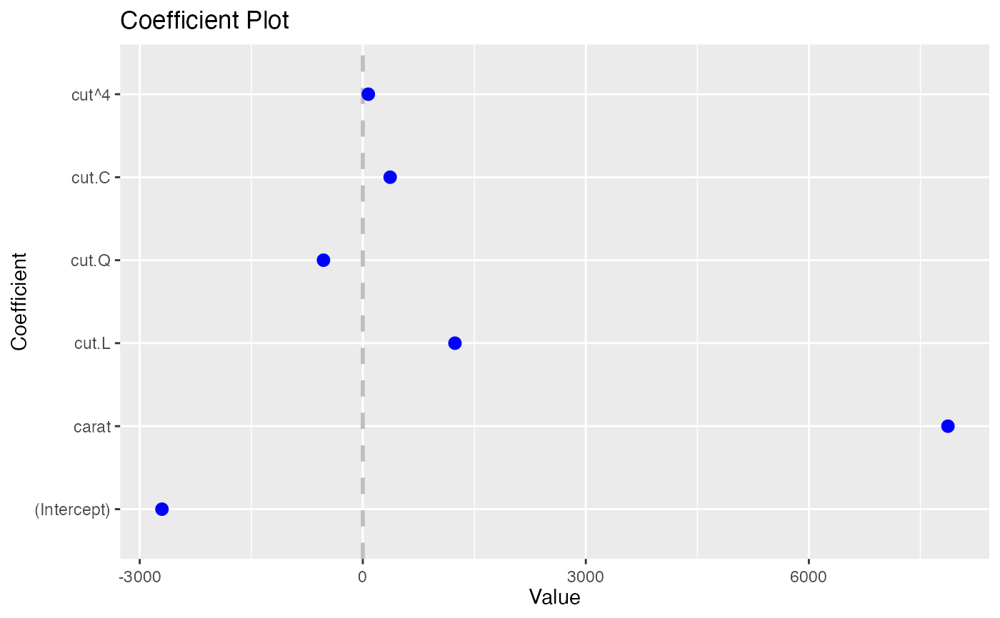

buildModelCI
buildModelCI.RdConstruct Confidence Interval Values
Construct Confidence Interval Values
Usage
buildModelCI(model, ...)
# S3 method for default
buildModelCI(
model,
outerCI = 2,
innerCI = 1,
intercept = TRUE,
numeric = FALSE,
sort = c("natural", "magnitude", "alphabetical"),
predictors = NULL,
strict = FALSE,
coefficients = NULL,
newNames = NULL,
trans = identity,
decreasing = TRUE,
name = NULL,
interceptName = "(Intercept)",
...
)Arguments
- model
A Fitted model such as from lm, glm
- ...
See Details for information on
factors,onlyandshorten- outerCI
How wide the outer confidence interval should be, normally 2 standard deviations. If 0, then there will be no outer confidence interval.
- innerCI
How wide the inner confidence interval should be, normally 1 standard deviation. If 0, then there will be no inner confidence interval.
- intercept
logical; Whether the Intercept coefficient should be plotted
- numeric
logical; If true and factors has exactly one value, then it is displayed in a horizontal graph with continuous confidence bounds.; not used for now.
- sort
Determines the sort order of the coefficients. Possible values are c("natural", "magnitude", "alphabetical")
- predictors
A character vector specifying which variables to keep. Each individual variable has to be specified, so individual levels of factors must be specified. We are working on making this easier to implement, but this is the only option for now.
- strict
If TRUE then predictors will only be matched to its own coefficients, not its interactions
- coefficients
A character vector specifying which factor variables to keep. It will keep all levels and any interactions, even if those are not listed.
- newNames
Named character vector of new names for coefficients
- trans
A transformation function to apply to the values and confidence intervals.
identityby default. Useinvlogitfor binary regression.- decreasing
logical; Whether the coefficients should be ascending or descending
- name
A name for the model, if NULL the call will be used
- interceptName
Specifies name of intercept it case it is not the default of "(Intercept").
Value
A data.frame listing coefficients and confidence bands.
A data.frame listing coefficients and confidence bands.
Details
Takes a model and builds a data.frame holding the coefficient value and the confidence interval values.
Takes a model and builds a data.frame holding the coefficient value and the confidence interval values.
Examples
data(diamonds)
model1 <- lm(price ~ carat + cut, data=diamonds)
coefplot:::buildModelCI(model1)
#> Value Coefficient HighInner LowInner HighOuter
#> cut^4 74.59427 cut^4 90.83386 58.35469 107.0734
#> cut.C 367.90995 cut.C 388.12410 347.69579 408.3383
#> cut.Q -528.59779 cut.Q -505.46541 -551.73018 -482.3330
#> cut.L 1239.80045 cut.L 1265.90049 1213.70040 1292.0005
#> carat 7871.08213 carat 7885.06176 7857.10251 7899.0414
#> (Intercept) -2701.37602 (Intercept) -2685.94495 -2716.80710 -2670.5139
#> LowOuter Model
#> cut^4 42.1151 model1
#> cut.C 327.4816 model1
#> cut.Q -574.8626 model1
#> cut.L 1187.6004 model1
#> carat 7843.1229 model1
#> (Intercept) -2732.2382 model1
coefplot(model1)
 data(diamonds, package='ggplot2')
model1 <- lm(price ~ carat + cut, data=diamonds)
coefplot:::buildModelCI(model1)
#> Value Coefficient HighInner LowInner HighOuter
#> cut^4 74.59427 cut^4 90.83386 58.35469 107.0734
#> cut.C 367.90995 cut.C 388.12410 347.69579 408.3383
#> cut.Q -528.59779 cut.Q -505.46541 -551.73018 -482.3330
#> cut.L 1239.80045 cut.L 1265.90049 1213.70040 1292.0005
#> carat 7871.08213 carat 7885.06176 7857.10251 7899.0414
#> (Intercept) -2701.37602 (Intercept) -2685.94495 -2716.80710 -2670.5139
#> LowOuter Model
#> cut^4 42.1151 model1
#> cut.C 327.4816 model1
#> cut.Q -574.8626 model1
#> cut.L 1187.6004 model1
#> carat 7843.1229 model1
#> (Intercept) -2732.2382 model1
coefplot(model1)

data(diamonds, package='ggplot2')
model1 <- lm(price ~ carat + cut, data=diamonds)
coefplot:::buildModelCI(model1)
#> Value Coefficient HighInner LowInner HighOuter
#> cut^4 74.59427 cut^4 90.83386 58.35469 107.0734
#> cut.C 367.90995 cut.C 388.12410 347.69579 408.3383
#> cut.Q -528.59779 cut.Q -505.46541 -551.73018 -482.3330
#> cut.L 1239.80045 cut.L 1265.90049 1213.70040 1292.0005
#> carat 7871.08213 carat 7885.06176 7857.10251 7899.0414
#> (Intercept) -2701.37602 (Intercept) -2685.94495 -2716.80710 -2670.5139
#> LowOuter Model
#> cut^4 42.1151 model1
#> cut.C 327.4816 model1
#> cut.Q -574.8626 model1
#> cut.L 1187.6004 model1
#> carat 7843.1229 model1
#> (Intercept) -2732.2382 model1
coefplot(model1)
